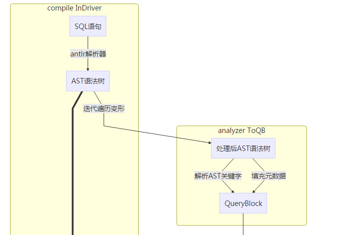

整体流程
结构转换

解析
- 从SQL语法解析为AST树
常用库
- ANTLR
- SCALA Parse [SPARKSQL]
分析
- 阶段一：遍历AST树，将子查询转换为QB链，映射关键字转换为QB内的成员变量，并填入元数据信息
- 阶段二：遍历QB的alias字段，对应转换为逻辑Operator
逻辑计划优化
- 根据基于规则的优化器，对逻辑OperatorTree进行优化
常见优化
- PredicatePushDown：谓词前置，谓词操作尽可能早执行；比如有SQL在join后filter，优化可以将filter条件提到join前。
- CorrelationOptimizer：利用查询中的相关性，合并有相关性的Job，参看paper：http://web.cse.ohio-state.edu/hpcs/WWW/HTML/publications/papers/TR-11-7.pdf
- ReduceSinkDeDuplication：合并线性的OperatorTree中partition/sort key相同的reduce
- GroupByOptimizer：Map端聚合
- BucketMapJoinOptimizer：转换MapJoin为桶MapJoin
- LimitPushdownOptimizer：limit下推，让RS阶段计算TOP-K的记录
- GlobalLimitOptimizer：全局LIMIT，通过直接获取到符合要求的limit条记录减少输入
- SimpleFetchOptimizer：没有join、groupby、distinct、子查询等的任务，执行转换为FetchTask，读取表数据返回
-
- HiveOpConverterPostProc： Calcite操作转换，CBO开启时会应用Calcite解析
逻辑计划转换物理计划
- 为query且仅有select的语句增加FetchTask
- 若为非query、非create的语句，增加LoadTask
- 根据引擎选择Task生成器
- 不同Operator line生成对应Task；比如MR引擎，TableScanOperator%会生成StatsTask，FileSinkOperator%会生成FileSinkTask
- TS%.*RS%规则：对应MRTask
- RS%.*RS%规则：合并成一个Task
- Union%规则：对应Union所需的Task
- Union%.*RS%规则：支持Union的MRTask
- MapJoin%规则：MR的Join转换为Map端的Join
物理计划优化
- 不同引擎有各自的物理计划优化器，以MR为例
- SkewJoin优化，作用于CommonJoin%；为了防止倾斜的Key，会中间存储到HDFS，接下来的MR任务会获取这些Key，并使用MapJoin来加速。
- CommonJoin优化，若多表连接查询，且其中小表的大小之和小于条件Task的阈值，可以合并表，再联合大表做MapJoin，变为Map-Only的作业。
- SortMergeJoin优化，会将SMB Join转换为MapJoin作业，如果执行失败，会以SMB Join作为后备任务运行
- NullScan优化，若检测到TS%FIL%编译期间计算为空，则去掉TS的所有输入目录；如果有limit 0限制，也去掉TS的所有输入目录
- 优化规则还是通过扫描OperatorTree来判断
任务执行控制
- 从RootTask开始，循环调任务执行
- 执行根据广度方式进行执行，父Task完成后加入子Task到执行队列中
- Task可并发执行，并由参数控制并发线程数
- 执行完成后，若有FetchTask，则根据FetchTask获取数据，写入到标准输出